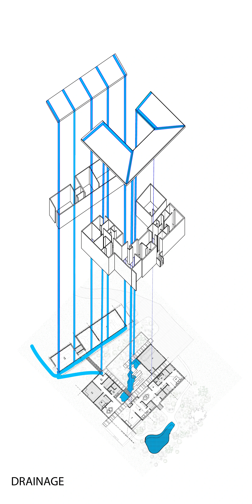
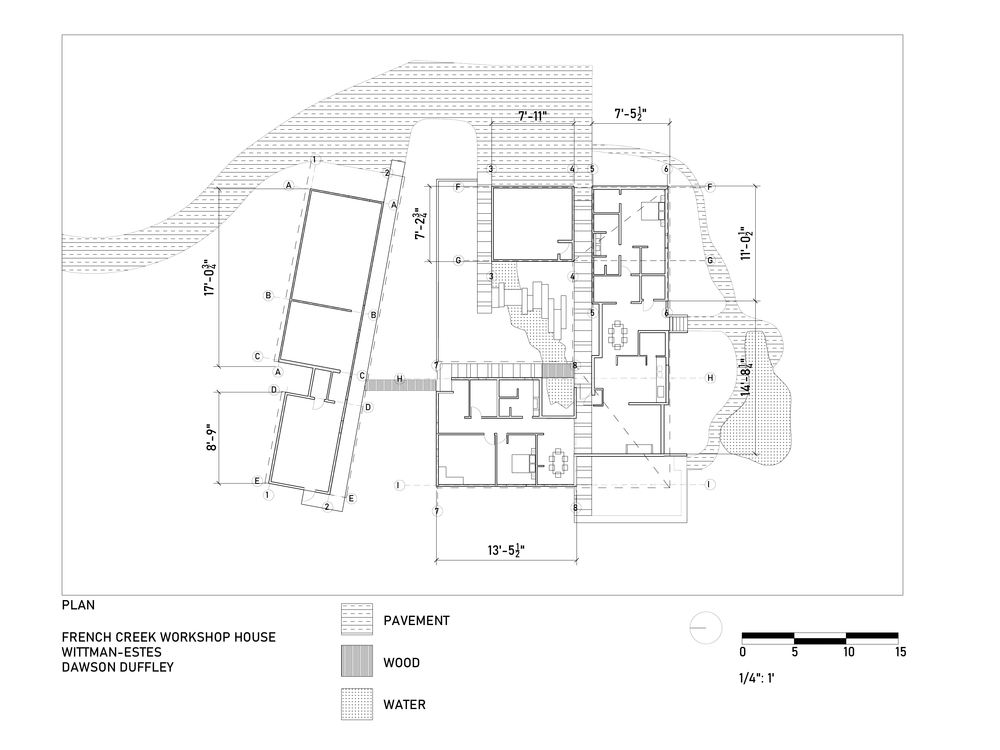
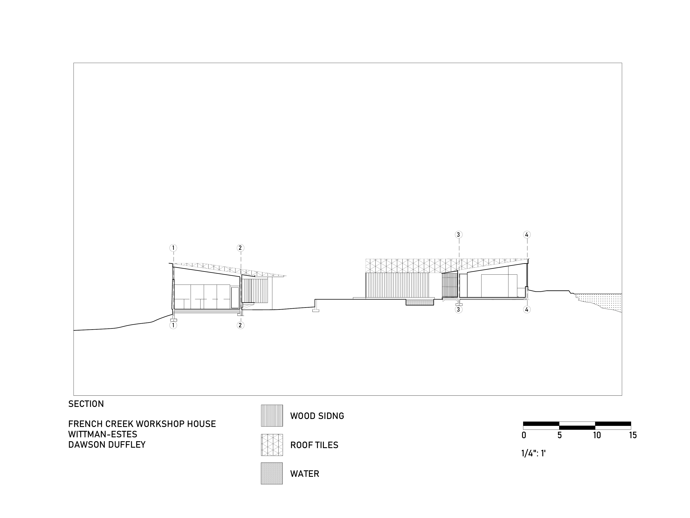
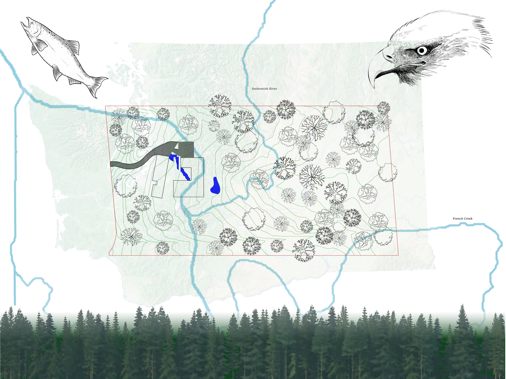

06 / Precedent / Digital media
French Creek Workshop House
Wittman Estes — Digital Media

Precedent analysis
An analysis of French Creek Workshop House through site-context collages, a drainage diagram, and measured plan and section drawings. The studies examine the building’s relationship to its surroundings, circulation, materials, and water.
Original architecture: Wittman Estes. Precedent analysis and drawings: Dawson Duffley.



